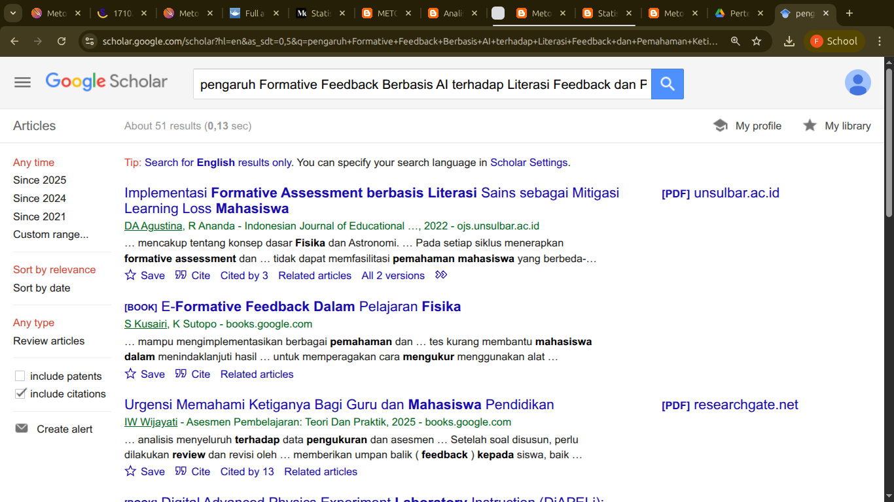
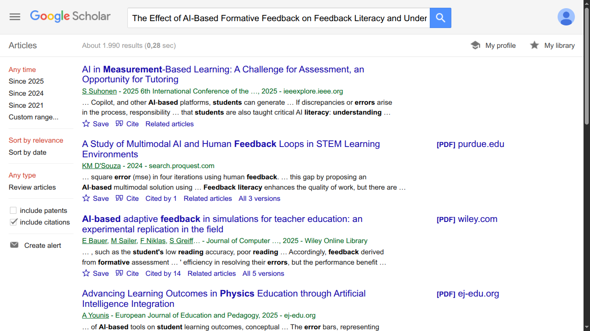

Metopen Kuantitatif - Usulan Novelty Artikel Pertemuan 11
fqs November 12, 2025 #PFIS258005 #kuliahNama: Firman Qashdus Sabil
NIM: 250321830676
| Judul & Reviewer | Metode Penelitian | Instrumen/ Data Penelitian | Hasil | Gap |
|---|---|---|---|---|
| Generative Artificial Intelligence Acceptance Scale: A Validity and Reliability Study Firman Qashdus Sabil | studi pengembangan skala, tiga fase: (1) penyusunan item & validasi isi oleh ahli; (2) EFA pada sampel awal (n ≈ 338); (3) CFA pada sampel konfirmasi (n ≈ 250). Analisis reliabilitas (Cronbach’s alpha, test–retest) | kuesioner self-report akhir: 20 item yang terbagi ke dalam 4 faktor (performance expectancy, effort expectancy, facilitating conditions, social influence), dalam skala Likert. | Struktur 4-faktor terkonfirmasi; varian total ~78%; Cronbach’s α tinggi (~0.97) dan test–retest reliabel (~0.95). Skala dinyatakan valid & reliabel untuk mengukur penerimaan generative AI pada mahasiswa. | Perlu studi lintas-konteks (konteks lab/kelas Fisika), belum banyak dieksplorasi hubungan skala penerimaan dengan outcome pembelajaran/engagement/pemanfaatan feedback AI. |
| Digital literacy scale: Validity and reliability study with the rasch model Nafila Lana Amalia | pengembangan item pool $\Rightarrow$ expert content validity $\Rightarrow$ EFA/CFA $\Rightarrow$ analisis Rasch (WINSTEPS) dan berbagai uji reliabilitas (Cronbach’s alpha, Spearman–Brown, split-half). Sampel: ratusan siswa menengah. | 20 item, 4-point Likert (setelah penyempurnaan), dan hasil analisis menyokong unidimensionalitas/fit model Rasch (dokumentasi fit, item difficulty, category functioning). | DLS 20-item menunjukkan bukti validitas isi & struktur, reliabilitas tinggi; tidak ditemukan masalah local dependence besar; kategori respons dioptimalkan (4-point). | Hubungan kausal antara digital literacy dan efektivitas pemanfaatan AI/feedback belum diuji khususnya di konteks pembelajaran subjek (mis. laboratorium Fisika). Perlu studi yang menghubungkan skala DLS dengan outcome pembelajaran spesifik. |
| Students’ feedback literacy in higher education: an initial scale validation study Allysa Hafsah Hafidhah | pengembangan item overinclusive $\Rightarrow$ EFA $\Rightarrow$ Rasch $\Rightarrow$ CFA; N awal ≈ 221; juga uji validitas kriterial. Fokus: menangkap baik disposisi (attitudes) maupun enactment/praktik (practices). | self-report 21 item, dua dimensi (attitudes & practices). Analisis menunjukkan struktur dua-dimensi parsimonious dan bukti psychometric yang memadai. | instrumen dapat membedakan antara “talking the talk” (attitude) dan “walking the walk” (practices). Rekomendasi: intervensi peningkatan literasi feedback harus menyasar kedua aspek. | studi lebih lanjut diperlukan untuk melihat hubungan antara literasi feedback (attitude/practice) dengan learning gains konkret di mata kuliah Fisika, serta bagaimana AI-mediated feedback mempengaruhi kedua dimensi itu. |
| Developing critical thinking test for adolescents: A validity and reliability study from the Czech Republic Cindy Tyas Harvina | desain berbasis teori (analisis pustaka) $\Rightarrow$ item development $\Rightarrow$ IRT (2PL vs 3PL), CFA, analisis reliabilitas; ukuran sampel besar memungkinkan validasi kuat. | versi singkat 33-item yang mengukur tiga aspek: analysis, evaluation, inference. Dibangun agar dapat diselesaikan dalam satu jam pelajaran. | instrumen andal & valid; tiga subskor berkorelasi tapi dapat dibedakan; memungkinkan monitoring perkembangan critical thinking. | aplikasi langsung dalam konteks pembelajaran Fisika (mis. keterkaitan dengan keterampilan laboratorium & penggunaan feedback) belum diuji; juga ada ruang untuk memasukkan dimensi etika. |
| Evidence for validity and reliability of a research-based assessment instrument on measurement uncertainty Dhinar Asri Intantri | evidence-centered design, item development, student interviews untuk membangun reasoning codes; validasi memakai Classical Test Theory (CTT) pada couplet scores, analisis diskriminasi, reliabilitas, test–retest, dll. Sampel besar (36 mata kuliah di 22 institusi selama tiga semester (Fall 2022–Fall 2023); 2.596 respon mahasiswa dan 36 respon ahli (instructor/peneliti). | SPRUCE, online, ~15 menit, berbagai format (MC, multiple response, numeric open, coupled items). Skor dianalisis pada tingkat couplet & AO (assessment objectives). | bukti kuat validitas & reliabilitas untuk mengukur konsep measurement uncertainty; average score ~50% menandakan kesesuaian tingkat kesulitan; couplet scoring efektif untuk menilai beberapa AO dalam satu item. | bagaimana intervensi feedback (manual atau AI-mediated) memodifikasi jawaban penalaran siswa pada tingkat reasoning elements couplets masih sedikit dieksplorasi. Integrasi formative assessment berkelanjutan (mis. feedback otomatis saat lab berlangsung) dengan SPRUCE-like items juga belum diuji. |
Terdapat beberapa hasil menarik dari artikel-artikel di atas:
- Keempat artikel skala/tes (AI acceptance, DLS, feedback literacy, CTT) menekankan prosedur pengembangan instrumen: item pool $\Rightarrow$ expert review $\Rightarrow$ EFA/CFA $\Rightarrow$ Rasch/IRT atau CTT $\Rightarrow$ reliabilitas. Ini menunjukkan pola metodologis umum yang bisa Anda tiru.
- SPRUCE berbeda karena fokus pada assessment spesifik Fisika (measurement uncertainty) dan menggunakan couplet scoring + evidence-centered design — sangat cocok sebagai model untuk tugas master Anda jika mau fokus pada lab Fisika.
- Feedback literacy (artikel C) memberi instrumen yang tepat untuk menangkap kesiapan siswa menggunakan feedback, penting bila Anda ingin melihat bukan hanya apakah feedback diberikan, tapi apakah siswa memanfaatkan feedback itu.
Usulan Judul:
Pengaruh Formative Feedback Berbasis AI terhadap Literasi Feedback dan Pemahaman Ketidakpastian Pengukuran Mahasiswa Laboratorium Fisika
The Effect of AI-Based Formative Feedback on Feedback Literacy and Understanding of Measurement Uncertainty of Physics Laboratory Students
 